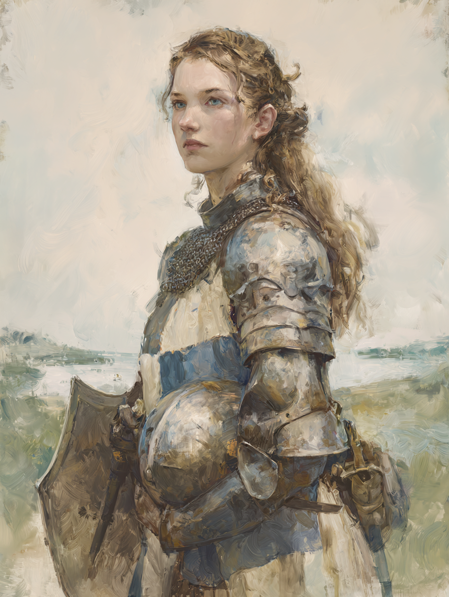

errant knight · Aquitanian Christian · sworn to Lady Nineve · she with the glowing skin and sky-blue eyes

Dame Eleanor d'Agen is a knight errant of Aquitaine, two-and-twenty, sworn in homage to Lady Nineve of the Lake. She is, by the unusual office her liege has set upon her, set loose upon the world with the simple commission to bring good unto the land. She rides without asking coin or patronage, suffers from the poor equipment that follows such a vow, and musters in its place more passion and determination than most knights of her age. She is the heir of her father, Sir Edern; her mother, Lady Elaine, lives. She is a Christian after the Aquitanian fashion, devout but not severe. She has thirteen-hundred Glory of her own earning to her name, on top of seven hundred inherited.
Set loose upon the world with the simple mission to bring good unto the land by her liege, the Lady of the Lake, Dame Eleanor seeks to aid whomever she can. Without asking for coin or patronage, Dame Eleanor suffers from poor equipment but is able to muster more passion and determination than most other knights. She travels along the road trying to fulfill her mission.
Glowing skin. Sky-blue eyes. A lithe frame. She is APP 16 — striking — and the glow is the sort of thing that does not entirely belong to mortal Aquitaine. The eyes are the colour of the lake at noon. Whether this is a blessing of her liege, the natural inheritance of an Aquitanian Christian of unusual piety, or something the Lady has given her without comment, is not the sort of question that has ever been answered out loud.
Checky azure and argent. A clean, bold field, more becoming a great lord's banner than the small means of a knight errant. Flanked, on the proper escutcheon, by two wyverns vert — the Aquitanian supporters.
She is determined in a way that registers, on most knights' instruments, as a kind of reproach. She does not lecture. She does not need to. She is Energetic 16 and Temperate 16 — she neither tires of doing the work nor overshoots into excess — and she is Valorous 15, which the people who travel with her notice before her glowing skin. She is Courteous and well-spoken, and she sings: Singing 13 is her best non-combat skill outside First Aid.
Current HP 23. No wounds carried. Heir to her father's line.
Set upon the world by Lady Nineve to do good, Dame Eleanor may invoke her Chivalry passion for the purposes of Inspiration without needing to attain the Chivalric Knight ideal. This is the standing boon of her commission and the single mechanical fact that distinguishes her from any other Aquitanian knight of her means.
| Passion | Value | Court |
|---|---|---|
| Homage — Lady Nineve | 16 | Fidelitas |
| Chivalry | 13 | Civilitas |
| Hospitality | 12 | Civilitas |
| Duty — Peasants | 12 | Fidelitas |
| Love — Family | 10 | Fervor |
| Station | 8 | Civilitas |
| Devotion — Deity | 8 | Adoratio |
| Fidelitas (court total) | 28 | strongest court |
| Civilitas (court total) | 33 | strongest civic identity |
| Fervor (court total) | 10 | |
| Adoratio (court total) | 8 |
Note: she has no Fealty entered. Her one feudal tie is the homage she has given Lady Nineve, and the Duty (Peasants) that follows from it. She owes service to no other lord.
Christian religious virtues marked †. Five traits are balanced 10/10 — the open ground on which she will be tested.
| Chaste | 12 | 8 | Lustful |
| Energetic | 16 | 4 | Lazy |
| Forgiving | 10 | 10 | Vengeful |
| Generous | 12 | 8 | Selfish |
| Honest | 10 | 10 | Deceitful |
| Just | 12 | 8 | Arbitrary |
| Merciful | 13 | 7 | Cruel |
| Modest | 10 | 10 | Proud |
| Prudent | 10 | 10 | Reckless |
| Spiritual | 13 | 7 | Worldly |
| Temperate | 16 | 4 | Indulgent |
| Trusting | 10 | 10 | Suspicious |
| Valorous | 15 | 5 | Cowardly |
Generous (Service) +6 — the lived edge of her commission. When the work in front of her is service to someone who needs it, she gives without counting.
| Weapon | Skill | Damage | Notes |
|---|---|---|---|
| Arming Sword | 15 | 6d6 | blessed by a priest during the errantry; the elevated damage holds for its duration |
| Lance (Charge) | 15 | per Horse | mounted, in the lists or in the field |
| Dagger | 10 | 2d6+5 | at the belt; useful in close work |
| Spear | 6 | 5d6 | functional, not her instrument |
| Piece | Form | Notes |
|---|---|---|
| Mail / Plate | Hauberk | the principal protection of her station |
| Textile | Aketon | worn beneath the mail |
| Helm | Open helm | face uncovered; the glow shows |
| Shield | Kite shield, checky azure and argent | +6 protection |
| Total Armour Protection | 9 + 6 | 15 with shield engaged |
The poor equipment her commission imposes is felt here. The hauberk, the aketon, and the open helm are her means; she has no closed helm and no surcoat suited to a knight of her actual Glory.
The whole bench of her traits is 10/10. Forgiving/Vengeful, Honest/Deceitful, Modest/Proud, Prudent/Reckless, Trusting/Suspicious. Five of her thirteen traits are exactly balanced. This is the open ground on which the errantry will test her — she has not yet been pushed in any of these directions, and play moves the needle.
Her three peaks are Temperate 16, Energetic 16, Valorous 15. She is the woman who does the work, who does not overshoot, and who is not afraid. These are her "Famous" traits on the handout her player carries.
First Aid 15 is the second-loudest number on her sheet. After Sword, Charge, and Horsemanship, it is her best skill. She is, before she is a sword, someone who can keep another body alive on the road. This will matter.
The structural fact of Dame Eleanor's interior is the commission. She has been given a piece of work by a being who is more than a feudal lord, and she carries it across an Aquitaine that is not arranged around her doing it.
Lady Nineve of the Lake has set her loose upon the world to bring good unto the land. The phrasing is deliberate — not upon her lord's lands, not upon Christian land, but the land, undivided. The vow forbids her to ask for coin or patronage; the equipment that follows is the equipment that follows. She carries it without complaint. Her Homage to Lady Nineve is her highest Fidelitas value (16), and her Chivalry (13) is the instrument by which the commission is exercised in any given hour.
Temperate 16 and Energetic 16, paired. She does not stop. She does not overdo. Most knights of her age fail on one of those two axes; she fails on neither. Add Valorous 15, and what she is, mechanically, is a person who shows up and keeps going, and is not afraid when the river hisses. The campaign asks knights to ride into trouble; she rides into it without needing to be talked into it.
Five of her traits are 10/10. The errantry has tested her on Valour (she dove into a fae river), on Energy (she stayed on the bank all night), and on Mercy (she spared no anger when the boy baron took the credit). It has not tested her on Honesty, on Pride, on Trust, or on Vengefulness. The first time she is asked to lie cleanly for a good purpose — or asked to forgive someone who has cost her something dear — the dice will set those traits where they want to sit.
Her Civilitas total is 33 (Hospitality 12 + Station 8 + Chivalry 13). She is, in the language the system uses for what kind of knight a knight is, primarily a civic figure: she does courtesy, she does hospitality, she does the chivalric work in front of her. Her Fidelitas total is 28 — weighty, but only because of the Homage to her one extraordinary lord. Her Adoratio (Devotion 8) is real but not the centre of her gravity. Her Fervor (Love Family 10) is a banked ember, not a current flame.
She is not a zealot — her Devotion (Deity) is only 8, the lowest of her named passions. She is not a Saxon-hater or a Pagan-baiter; the sheet records no Hate at all. She is not vengeful, not yet — Forgiving/Vengeful sits at 10/10 and has not been pushed. She is not a child of court; her Fashion is 5, her Intrigue is 8, her Dancing is 6. She is not a strategist; her Battle is 5. What she does, she does on the road.
Both rouncies are noted on the sheet as inferior versions of a normal charger and rouncy — the equipment penalty of the commission.
Her shield is checky azure and argent — a six-by-eight chequered field of sky-blue and silver, the same colours as the lake her liege keeps and the same colours as her own eyes. Two wyverns vert flank the proper escutcheon as the Aquitanian supporters of her family arms. The blazon is bold and old; it would not be out of place on a banner ten times its bearer's means.
Year 512. The mission was the simple shape of Eleanor's commission: a boy named Maelor — son of a lord — had been taken into the water by a Nucker, a giant river-serpent of the fae country. Eleanor and a small company of knights took the trail.
The track led across the territory of a young baron, hardly out of his minority. Eleanor's company dispatched an NPC knight to the baron's seat with the courtesy a chivalric crossing required — word that they were upon his lands, and why. The hospitality of the form was kept. The boy baron sent no objection. The company pressed on.
They came upon the Nucker by night and engaged it. The serpent broke and fled into the water, retreating to an underwater cave at the head of a lake. The company would not abandon the boy to whatever lay below. They dammed the creek that fed the lake and held the bank until morning, waiting for the water to drop or for the creature to come out.
In the morning the boy baron arrived in person. He insisted, with the prerogative of his rank and the eagerness of his age, on taking the creature himself. He was immediately seized and dragged underwater. He was knocked senseless almost in the same motion. The whole posture of the action shifted at once: not a hunt now, but a rescue inside a rescue.
Eleanor shed her armour at the lake's edge — the hauberk, the aketon, the open helm, all of it — and went into the water. She swam into the underwater cave and surfaced in the airbubble within. Maelor was there. He was not bound. He was not afraid. He was wondering, when she found him, where his friend the Nucker had got to.
Maelor's understanding of what had taken him was not what the company on the bank understood. He had not been captured in the way the lord, the baron, or the knights had imagined. He had been kept — in his own account — by something he considered a friend. This complication is not resolved on the page. It is held inside Eleanor's memory and not, so far as can be told from the sheet, in any other knight's.
Eleanor and Maelor emerged from the cave at the moment one of the other knights of the company struck the killing blow upon the Nucker. A second knight, with quick presence of mind, took hold of the unconscious boy baron's sword hand, drove the boy baron's blade into the dying creature, hauled him to shore, and cried out that the baron has killed the Nucker. The baron came to. He was elated to learn this. The fiction was permitted to stand.
The company escorted Maelor back to his family. The boy baron retains, so far as Eleanor knows, the public credit for the kill. Eleanor, the knight who actually went into the water for the boy, has said nothing of the matter to the baron's people. She has held the truth quietly and ridden on.
+50 Glory for the Tracking. +100 Glory for the Return. Honour unchanged at 15. No wounds carried. No fame yet attached to the act — the kill is credited where the company let it be credited — but Eleanor leaves Year 512 at Glory 2,000, and the priest's blessing on her arming sword (6d6 damage) holds for the errantry's duration.
Do not play her as Galahad. Her Devotion is only 8; her Civilitas is her heaviest court, not her Adoratio. She is a knight of the road, of hospitality, of the chivalric act in front of her — a worker, not a saint. Her glow is a gift, not a halo. Her poverty is real and felt. Her Temperate 16 means she does not crow, and her Modest 10 means she does not deny it when asked plainly. Press her on the five 10/10 traits before pressing her on the high ones; the open ground is where she becomes herself.